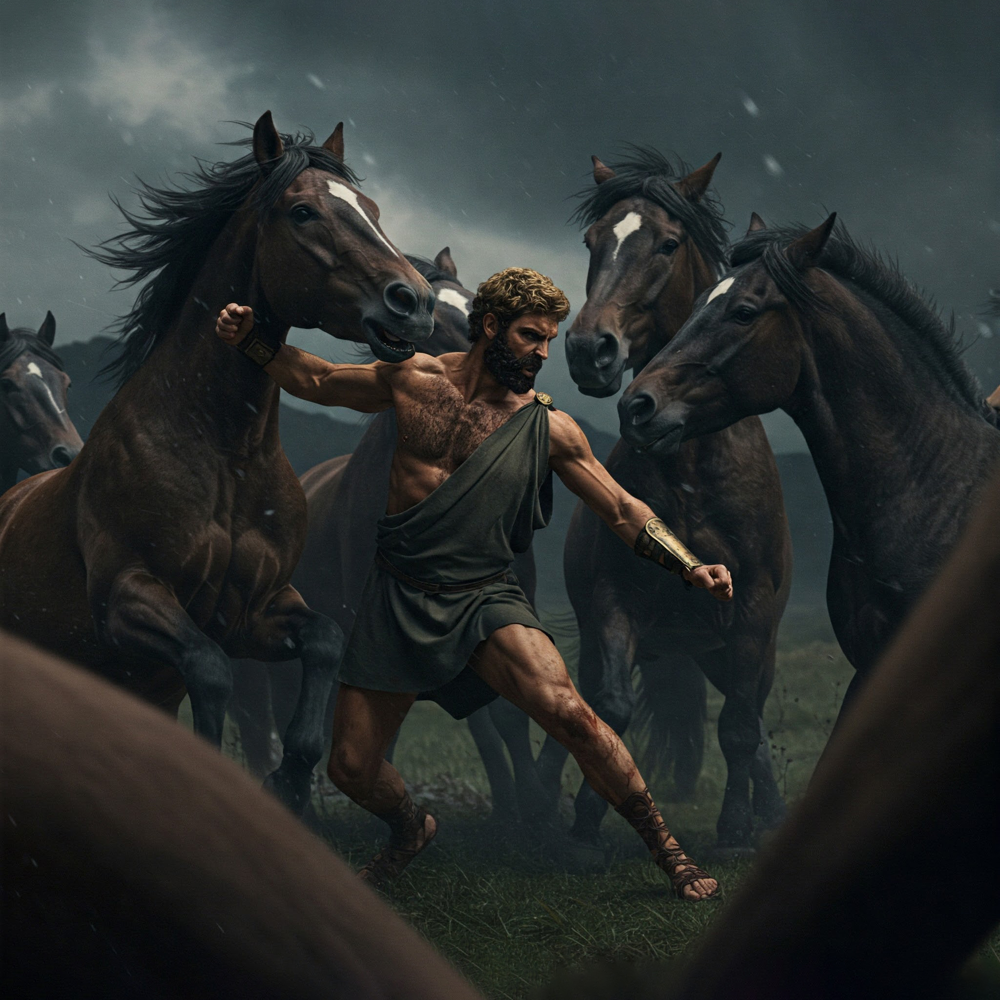

La llanura de Tracia exhala un gemido. El viento arrastra un olor a sangre vieja y herrumbre. Delante de ti, cuatro siluetas se mueven entre la niebla: caballos más altos que torres, con ojos blancos y bocas teñidas de rojo. Sus pesebres están hechos de huesos humanos.
"No son bestias... son demonios con crines", gruñe un esclavo escapado, mostrando el muñón de su brazo izquierdo. "Diomedes las alimenta con la carne de los intrusos. ¡Huyen de nada... excepto del sonido de su propio nombre!"
Un relincho desgarra el aire. Las yeguas levantan la cabeza. Te han olido.
Piensa rápido tu próximo movimiento.
